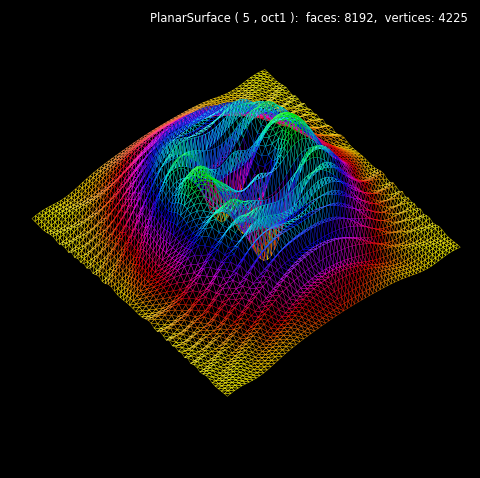
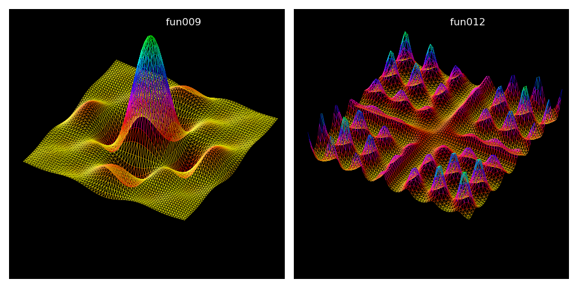

Wireframe Plots¶
Mapping function are similarly defined as in the Geeks3D examples. Here, the only difference is the use of Numpy arrays.
import numpy as np
import matplotlib.pyplot as plt
import s3dlib.surface as s3d
import s3dlib.cmap_utilities as cmu
#.. Wireframe plot
# 1. Define function to examine .....................................
def fun011(xyz) :
x,y,z = xyz
X2, Y2 = x**2, y**2
a,b = 0.04, 0.06
R2 = a*X2 + b*Y2
one = np.ones(len(x))
f = np.sin( X2 + 0.1*Y2)/( 0.1*one + R2 )
g = ( X2 + 1.9*Y2) * np.exp( one - R2)/4
Z = f + g
return x,y,Z
# 2. Setup and map surfaces .........................................
rez=5
cmap = cmu.hsv_cmap_gradient([1.166,1,1],[0.333,1,1])
surface = s3d.PlanarSurface(rez,basetype='oct1',linewidth=.3)
surface.transform(scale=10)
surface.map_geom_from_op(fun011)
surface.map_cmap_from_op(lambda xyz : np.abs(fun011(xyz)[2]), cmap )
surface.shade(.5).hilite(.3)
surface.set_facecolor([0,0,0,0])
# 3. Construct figures, add surface, plot ...........................
fig = plt.figure(figsize=plt.figaspect(1), facecolor='black')
fig.text(0.975,0.975,str(surface), ha='right', va='top',
fontsize='smaller', multialignment='right', color='white')
ax = plt.axes(projection='3d')
minmax = (-8,8)
ax.set(xlim=minmax, ylim=minmax, zlim=minmax)
ax.set_axis_off()
ax.set_facecolor('black')
ax.set_proj_type('ortho')
ax.view_init(50,140)
ax.add_collection3d(surface)
fig.tight_layout()
plt.show()
Further examples of viewing only edges are shown below. Surface objects were identically constructed as in the previous script with only changes made to the function references.
# 1. Define function to examine .....................................
def fun009(xyz) :
x,y,z = xyz
a,b,c = 1,1,15
lim = 0.001 # use L'Hosital's rule as x -> 0
A = np.where(np.abs(x)<lim, np.ones(len(x)), np.divide( np.sin(a*x), a*x ) )
B = np.where(np.abs(y)<lim, np.ones(len(y)), np.divide( np.sin(b*y), b*y ) )
Z = c*A*B
return x,y,Z
def fun012(xyz) :
x,y,z = xyz
A = 0.9*np.exp( np.sin(2*x)*np.sin(0.2*y))
B = 0.9*np.exp( np.sin(2*y)*np.sin(0.2*x))
Z = A*B
return x,y,Z